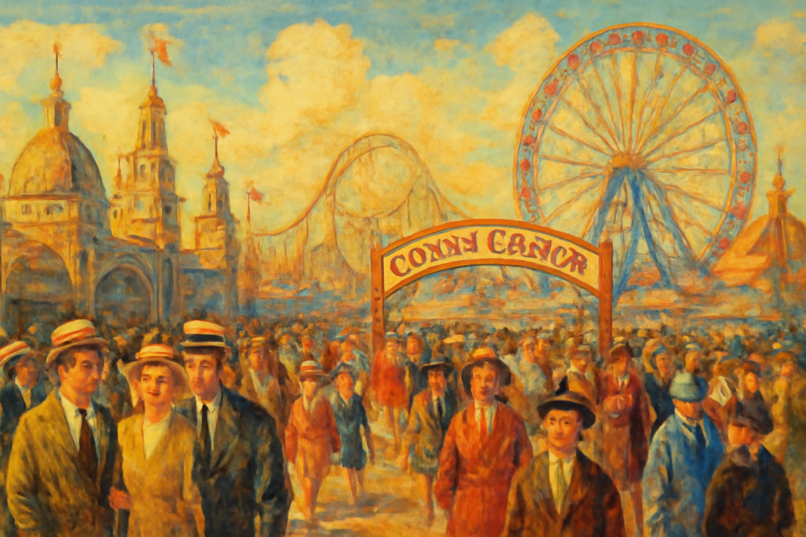
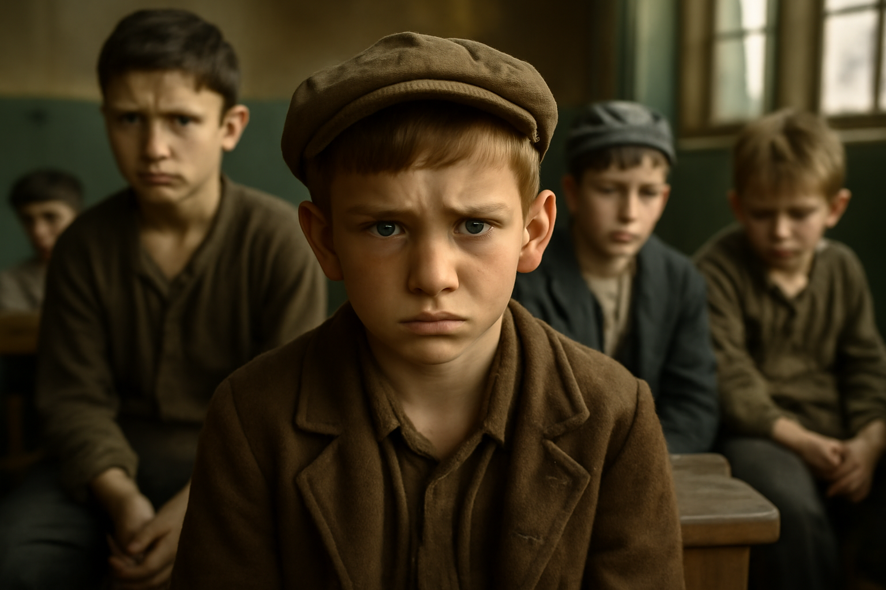

Life only begins
beyond the
Atlantic
from the life story of
Maeve Gallagher
(1904,
Belfast - 1976, Boston)
written
by Reinhid
Prolog
This is a fictional story; all names and plots are my own.
It takes place in 1920 in Manhattan, USA.
I hope you enjoy
the show.
Reinhild's myRomance
copyright © 2025 all rights reserved
Chapter 1
"Come in, Maeve," Desmond O'Brian called with a broad grin that underscored his confident demeanor. He casually beckoned her over with his arm as he sat at one of the tables.
Maeve quickly served the drip coffee she had just prepared and
then hurried back to the restaurant.
"Please, Mr. O'Brian," she said softly, her voice almost a
whisper, reflecting her Irish Catholic reserve. Desmond raised an
eyebrow. His gaze remained friendly, but carried a hint of
challenge. "Sit down, Maeve. We have something to discuss." He
gestured to the chair next to him.
Maeve hesitated, then carefully sat down on the edge of the chair.
Her heart pounded. Was he dissatisfied with her work? Was she
about to be fired? Nervously, she smoothed her apron as she tried
to organize her thoughts.
"Listen, Sheila's out for a while. Now I urgently need a
replacement for inside. And that's when I thought of you."
Desmond's voice was relaxed, but a certain determination flashed
in his eyes. "It's different, of course, working inside, but I've
been watching you for the last few weeks. You've got what it
takes. And," he smiled wickedly, "there's more money, too." Maeve
wasn't sure what to make of his offer. Hesitantly, she pointed up
the oak stairs. "You mean upstairs?" she swallowed. The mere
thought of it was visibly taking its toll on her, so that her
voice was barely audible above a whisper.
"No, not upstairs," Desmond said quickly, his voice softening,
almost soothing. "You don't have to do that. You're not the type
for that. It's just down here, serving food and drinks. That's
basically it. But I expect you to adapt a little more to our
operation." He smiled broadly. "I'll tell Patricia to take you
under her wing starting tomorrow."
Maeve nodded slowly, her expression relaxing slightly. "Okay," she
said quietly, her relief evident. "I'll do it, boss." Desmond
stood up, but before he left, he placed his hand on her shoulder,
loosely but with a certain warmth.
"I knew it. We Irish people have to stick together, don't we?" His
voice became even friendlier. "Oh, by the way, drop the 'Mr.'.
From now on, I'm Desmond to you." He winked at her, and Maeve
couldn't help but smile back. With that, he left the surprised
Maeve in the restaurant while he climbed the stairs to his office.
At dinner in their small, modest home, Maeve told her little
brother Rian about the incident. She felt him glued to her lips
expectantly as she told him about her promotion. Rian drummed his
fork on his plate and grinned broadly. "Great, then we can finally
have some bacon with our soda bread again, right?" His eyes shone
with joy, and he hugged Maeve tightly. Maeve returned the hug with
a warmth that only a big sister could give. She stroked his brown
hair lovingly.
"Let's see," she said gently, pressing a tender kiss to his
forehead. "I don't know exactly how much more I'll get, but
whatever it is, I'm happy for us." Her voice was full of hope.
Rian was her pride and joy, the one her entire life revolved
around. Since her mother passed away last year, Maeve felt
obligated to do everything she could to protect and care for her
little brother. He was only ten years old. She, on the other hand,
would be coming of age in a year. Therefore, she was also the
support, the love, and the strength of this little family.
"Say the prayer," Maeve urged Rian as she knelt next to him on the
narrow bed, wearing her simple gray dress. They clasped their
hands together, and Maeve closed her eyes to pray for her brother
and herself.
"God, be with me this night. Protect me with your power. Give me
peace and rest, and awaken me anew in the morning. And thank you,
Mr. O'Brian," she heard Rian say. He recited the prayer with a
childlike sincerity that touched Maeve deeply.
After the prayer, both of them crawled into the only bed available to them, exhausted from the day. It was small, but it was their sanctuary to relax. Maeve took one last look around the room: the small beech table with two simple wooden chairs and the shelf on the wall where they had stored the few belongings they owned. Through the door to the room, she could see the mirror above the sink in the small adjoining room, reflecting the cast-iron coal stove they used for cooking and heating.
She was too tired to go downstairs to the communal restroom. So she turned off the light and hoped to fall asleep soon. But the thought of Rian's prayer and the hope for better days wouldn't leave her alone. "Thank you, Mr. O'Brian," she repeated the part of the prayer. Yes, Desmond. O'Brian was the only safe haven she had here in Manhattan, she was becoming increasingly aware of this. She had taken over her mother's position as seamstress in the textile factory when her health no longer allowed her to work the 10-hour shifts. However, in the factory, she was just one among many seamstresses, and if a worker was absent, she was immediately replaced by another. The work pressure was high, and at times Maeve felt like a machine.
Things were different at Desmond O'Brian's. There, she felt the joy of the guests when she looked after them, and they almost always gave her tips. Therefore, it didn't bother her that she had already put in 50 hours of work when she started her weekend shift as a server at Desmond's restaurant-bar. The work there filled her heart with so much joy that she was happy to run from the kitchen to the terrace and back countless times.
Desmond was also from Ireland, and that must have been the reason
why he had hired her back then, despite what felt like a botched
interview. And now she'd even been promoted. Her hard work and
loving helpfulness had paid off. Maeve pushed her head deeper into
the pillow and fell into a restful sleep.
The next day, a Sunday, she arrived at O'Brian's Restaurant-Bar
half an hour earlier than usual. Patricia stood in the doorway,
lighting a cigarette. She had been working for Desmond for some
time, was blonde, tall, and outrageously self-confident.
The
next day, a Sunday, she appeared. "I have no idea why Desmond
chose you," Patricia's gaze slid down Maeve's head, "but in here,
you have to learn a few rules first. So, I'll serve all the tables
up to the fourth row, the remaining three rows are your
responsibility. Is that clear?"
Maeve wanted to appear confident at all costs, but felt
intimidated by Patricia. She replied curtly, "Sure.
Understood."
"Oh, one more thing," Patricia continued her lecture, "you can't
walk around here like that. You have to offer the guests
something, so that they'll want to come back. You have to wear
your skirt and apron at least a hand's width higher so that more
leg is visible. And you should leave the button placket on your
blouse," Patricia began unbuttoning Maeve's blouse, "half open,
too."
Maeve was feeling extremely uncomfortable by now, but she didn't
dare contradict Patricia. So she followed the instructions, hoping
that would be the end of it. But she was wrong, because Patricia
now pointed her index finger toward the bar and explained, "In
here, we don't just serve ice cream, coffee, and non-alcoholic
Near Beer, like Bevo. The difference between the terrace and this
is that guests here also get spirits. Spirits, whiskey, rum, gin,
and various cocktails, everything that makes an evening truly
enjoyable."
Maeve stared at her. "But Prohibition," she blurted out. But
Patricia interrupted her sharply. "Forget Prohibition. It doesn't
apply in here. We're a speakeasy, you understand? We serve what
our customers want. It's logical, right?"
Shocked, Maeve pressed her hand over her mouth, as if to suppress
any mispronounced words. The color drained from her face. So that
was why they paid higher salaries here. Selling alcohol in New
York was illegal, that was well known, and now she too was being
prosecuted? Maeve was shocked.
Patrica had turned back toward the counter to tell Maeve about the
security measures in place when she heard a loud bang and
reflexively turned around. Maeve had slumped and fallen onto a
chair.
Chapter 2
Desmond approached Maeve with a serious expression. "Pat said
there were problems?" But she just stared ahead. So Desmond
decided to send Patricia back to work so he could calmly address
Maeve.
"Now, Maeve," he asked her calmly, almost fatherly. "What's wrong,
girl?"
"You didn't tell me that I should serve alcohol," she
sadly dropped her head and her hands. "I'm an honest person, I
want to do honest work."
Desmond examined her closely, then
he began in a reassuring tone, "Look, Maeve, I can understand you.
I'm Irish too. I spent my childhood in Belfast. You don't have to
explain to me how the Irish think. We are a staunchly Catholic,
hardworking, and pious people. And we can be proud of that, even
if the Americans don't see it that way. They think we're poor,
lazy, drunkards, criminals, and prone to violence." He paused
briefly.
"We all left Ireland because the country couldn't feed us. The
many famines, the lack of prospects. None of us emigrated for pure
pleasure. It was the hope of a new future that motivated us. We
wanted things to be better for ourselves and our children."
Another pause followed.
Desmond put his arm on her shoulder, like a friend's. "Maeve, has
anything changed for you since then? You're just fighting here to
survive. Otherwise, you wouldn't have shown up at my
restaurant-bar back then, working extra weekends. You've told me
your life story, but it's probably not much different than that of
most Irish people who live here in the Tenderloin, Hell's Kitchen,
or Five Points.
They all live in disastrous conditions, work all day, and don't
know how to make ends meet in the evening. Isn't that right?" He
looked at Maeve, who nodded in agreement.
"You probably have one of those shitty 10-hour contracts in one of
the industrial plants here, which leaves too much to die for and
too little to live for. Watch out, if you work for me all week
instead of just Saturdays and Sundays, I'll pay you more than you
get in the damn factory. And think of all the nice tips the guests
give you on top. I saw on the terrace how popular you are with
them. That'll get you by just fine and you can even save up an
emergency fund. What do you think?"
Desmond sensed that she wasn't quite convinced yet and spoke
again. "In a foreign country, it's important to follow its rules,
that's true. But what are the rules here in the Tenderloin?
Haven't you noticed that in this part of town, almost all the
restaurants are speakeasies, i.e., places to sell alcohol? Some
also sell drugs, or, like us, girls."
Do you think that would be possible if everything was under
prohibition? The secret of it all is that you have to get the
authorities on board. Then the system works. And we pay the local
police officers a lot of kickbacks so that they let us do what we
want. But if the police are already involved, then what we're
doing can't be that illegal, do you think?" He turned back to
Maeve.
"But didn't God..." Maeve began, but Desmond immediately completed
the sentence himself. "Didn't God say, take from the rich and give
to the poor? Maeve, God doesn't want you to go to the dogs here.
Recognize that." He hugged her comfortingly. "God said I'm giving
you Irish a new chance in America. This is the land of
opportunity. So have the courage to take your life into your own
hands and make something of it. I, for example, came to Manhattan
about two years ago, and look at what I've built up here. I didn't
have a penny in my pocket and now I run several bars in the
Tenderloin.
Maeve, we're here to climb the ladder of success. So be brave and
make something of your life. And one more thing to reassure you.
The authorities are almost never interested in waitresses. They
wanted to get the big fish, not the good-natured crumbs."
Desmond's words echoed past Maeve's ears. She seemed to barely
register the arguments her boss was using to convince her.
Desmond's presence, his voice, and his touch brought back familiar
memories of her father. Back when she was a child, he had also so
warmly embraced her and comforted her when she wasn't feeling
well. She felt herself letting go. How her tension eased as the
feeling of security from old times returned. Although she smiled
at Desmond, she couldn't suppress a large tear. How much she
missed her father, who had died in a shipyard accident in Belfast.
She had been just six years old at the time.
Desmond fatherly pulled a handkerchief from his suit and gently
dried her cheek. "Well, you can laugh again," he encouraged her.
"Listen, I'll make you a suggestion. I'll show you the security
features we've installed for our protection, and then you can
simply test out the new job for a day and see how you like it.
Agreed?" He held out his hand and winked. "The high five," Maeve
thought, "just like Dad." She couldn't help herself and
automatically accepted. The deal was done.
After Desmond showed her the safety buttons for the warning
systems installed throughout the restaurant, Maeve seemed finally
convinced. One press of a safety button was enough to light up a
small electric candle at each table, warning guests. At the same
time, the back bar, with all the alcohol, sank silently into the
floor and was thus no longer visible to third parties. Desmond had
installed the technology himself, and it was truly brilliant,
especially since various safety buttons were distributed
throughout the room and could therefore be activated quickly.
Desmond pulled his car keys out of his pocket. Then he called to
the two waitresses, "Patricia, Maeve, you'll get it done! I don't
want to hear any complaints," and left the restaurant laughing.
Maeve stood at the counter, her eyes intently fixed on Patricia.
She knew that she had worked there for years and was known for her
experience and skill. Patricia was essentially a quiet, reliable
woman who knew everything, but Maeve was keen to build a warm
relationship with her. A good working atmosphere was important to
her. Patricia was writing the daily specials on a blackboard with
chalk. Maeve quietly stepped to her side. With a warm smile, she
asked, "May I help you, Patricia? Should I start arranging the
flowers on the tables?" Patricia looked at Maeve for a moment,
surprised, then nodded gratefully. "That would be very kind,
Maeve. Thank you."
Maeve took the tray of small vases, filled each one with a little
water, and then trimmed the stem of each rose before placing it in
a vase. She carefully balanced the tray of flower vases on her
left hand and hurried from table to table, while her right hand
skillfully placed one vase at a time. Her movements were careful
and deliberate. She made sure the blossoms were arranged so that
every guest would perceive them as a friendly greeting.
It would be a while before the first guests arrived at the
restaurant, as it always opened a little later than the outdoor
terrace. Maeve wanted to use this time to learn more about her new
role. She went to the bar, which was located to the left of the
oak staircase. The metal surface of the counter gleamed, so
carefully Joe had polished it. Now he was putting away the
glasses. Maeve looked nervously at Joe and tugged at her fingers.
The bartender was a tall, powerful man, whose deep dimples
probably came from his permanent grin. Maeve took a deep breath
and addressed him with a small smile. "Hi, I'm Maeve. I'm supposed
to be serving inside from now on. I want to do everything right.
To be honest, I know little about alcoholic drinks, but I'm very
curious to learn more."
Joe looked over at her skeptically. "So you want to discover the
secrets of the many bottles, eh? Okay, Maeve, I'll tell you
something. But be careful, this isn't a piece of cake, even if it
looks like it.“
Maeve nodded eagerly. "I understand, I'm so excited. Please, can
you explain the main cocktails to me? I want to know what people
order here."
Joe grinned, his initial reluctance giving way
to a slightly amused look. "Okay, Joe will tell you something. But
only because you're so curious." He chuckled. "Let's start with a
classic: the 'Bee's Knees.' It's made with honey, lemon juice, and
gin. Sweet, but with a kick." Maeve laughed. "Honey in your drink?
How delicious!"
Joe grinned. "That's it. And then there's the 'Sidecar'. That's
brandy, orange liqueur, and lemon juice. Very elegant, almost like
a dance on the tongue." "Wow, that sounds great! Patricia said the
'French 75' is especially popular. What's that?"
Joe nodded approvingly. "The 'French 75' is a real hit. Gin,
champagne, lemon juice, and sugar syrup. It's like a little
firework in a glass. Perfect for a night full of secrets."
Maeve seemed excited. "That's really exciting! Please tell me
more. How do you make the 'Whiskey Sour'?"
Joe started laughing. "The 'Whiskey Sour' is simple: whiskey,
lemon juice, simple syrup, and sometimes a little egg white for
the foam. It's rough and smooth at the same time, just like life
here in the speakeasy."
They looked at each other, both laughing, while Maeve asked more
and more questions.
"You see, Maeve, being a bartender isn't a black box. It's an art,
and you have the spirit for it. Soon, you too will be mastering
cocktails like a pro."
Maeve beamed. "Thanks, Joe! I'm looking forward to serving
your cocktails to the guests!" "Yes, advertise me properly in the
restaurant," he said, amused. "Together we'll increase sales."
Now both of them shook with laughter. Meanwhile, Bessie Smith's
song "Me and My Gin" played softly on the record player in the
background, and the world outside seemed forgotten for a moment.
Then the first guests entered, and Maeve hurried to greet them and
escort them to their tables.
When Desmond returned late that evening and took a look inside the
restaurant, Maeve was already so familiar with the workings that
it seemed as if she'd been working there her whole life. He knew
then that she would stay.
Chapter 3
The next day, Maeve was leaning against the bar with Joe again.
Her eyes were fixed on the door, alert for any new guests
entering. The restaurant was relatively quiet. There were hardly
any guests present. Only the soft rustling of leaves outside and
the occasional clatter of glasses and cutlery could be heard.
Suddenly, Maeve noticed movement in the entryway. A white dove
floated in through the open door, its wings flapping gently as it
curiously explored its surroundings.
Maeve immediately felt an inner excitement. She loved animals, and
she knew the pigeon was probably just looking for some bread. With
a loving smile on her lips, she slowly approached the pigeon,
which hadn't been noticed by any guest yet. "Well, little one,
what are you doing here?" Maeve whispered gently, carefully
raising her hands so as not to frighten the pigeon.
"Come on, I don't mean you any harm," she said encouragingly. Her
voice was warm and soothing. "This is no place for you. Let's get
you back outside." She moved cautiously so as not to scare the
pigeon, trying to guide it gently toward the door. The pigeon
fluttered a bit, but seemed to sense Maeve's calm demeanor and
finally settled on her hand. Maeve smiled lovingly, gently stroked
its soft feathers, and spoke softly, "You're so beautiful, little
pigeon. Fly home now, okay?"
Just then, Desmond came out of his office. As always, he looked
stunning: muscular, young, slightly tanned, and encased in a
certain nonchalance. He had been observing the scene and now came
over to help. "Hey, Maeve, do you need any assistance?" he asked
with a friendly smile as he stood next to her.
Maeve looked at him gratefully. "I just wanted to get the pigeon
back outside. It's so beautiful, but the restaurant isn't the
right place for it." "Indeed," Desmond joked, "otherwise it might
end up in the cooking pot."
Maeve gently stroked the feathers once more before carefully
clasping the dove in both hands and carrying it toward the door.
Desmond opened the door for her, and Maeve released the dove from
her arms into the blue sky.
As Maeve and Desmond stood still for a moment, watching the
pigeon, they felt a pleasant closeness to each other. No words
were needed, just a smile, a look that said more than a thousand
words. Maeve felt her heart beat a little faster. Then everyone
went back to work.
A while passed, then the door opened again. A young lady entered.
She was probably no older than twenty-two, dressed in fashionable
clothes, with an elegant, confident demeanor. Her face was
beautiful, her eyes sparkling with joy and self-confidence. Maeve
could hardly look away from her, she was so stunningly beautiful.
With a radiant smile, the lady immediately attracted the attention
of everyone present. Maeve admired the charisma she exuded, while
at the same time feeling a little insecure as she caught herself
wondering whether she could ever look so elegant. Desmond, who
greeted the young woman with a gentle kiss, offered her his arm to
accompany her to his office. "Honey, you made it right on time,"
he said in his erotically masculine voice and kissed her hand.
"I'm so happy to see you."
The lady smiled back, her eyes sparkling with joy. "I'm so happy
to see you too, Desmond. How you have everything so well under
control here." She glanced into the small restaurant, which was
quite luxuriously decorated.
Maeve watched the scene in disbelief. She was impressed and yet a
little envious at the same time. She felt a mixture of admiration
and quiet longing as she watched the two disappear into the
office.
Admiration for Desmond, who was obviously very happy, grew in her
heart. She wondered what it would be like to have someone who
loved and appreciated her so much. Maeve shook her head slightly
to clear her thoughts and turned back to the restaurant.
She later learned from Patricia that the lady was Desmond's
fiancée and that the wedding was imminent. Outside, the sun had
already set when Maeve returned home.
The next day, the restaurant was about a third full. The
atmosphere was relaxed, and guests enjoyed their drinks and
conversation.
Then a middle-aged man entered the bar. He crept through the door
almost imperceptibly, appearing inconspicuous and quiet. But Maeve
immediately sensed that something was wrong with him. She felt a
sense of unease rising within her. The man was simply dressed,
which was nothing unusual for this area, but for a bar-goer, his
posture seemed extremely tense. He repeatedly glanced around
cautiously, as if he were searching for something. He sat down at
one of Patricia's tables and glanced furtively toward the bar, as
if he were waiting for something or watching someone.
Occasionally, his hand slipped into his jacket pocket, where it
fumbled for something.
Although Maeve knew Patricia wasn't comfortable with her taking
care of her guests, she approached the guest. "And, sir, what may
I get you?" she asked politely, putting on a friendly face. "What
do you have that's nice?" he wanted to know, but his voice sounded
as if it were disguised.
"Well, the usual," Maeve began listing the drinks she had served
on the patio, "Iced coffee, tea, near beer, milkshakes, drip
coffee, espresso," you name it.
"Well, kid, then bring me a French 75," he blurted out, somewhat
spitefully.
"Sorry, but we don't carry alcoholic beverages, Prohibition, you
know," Maeve replied, gathering all her courage.
“Okay, then a malt drink,” the guest snapped.
“As the lord wishes,” Maeve completed the order and hurried to the
bar.
There, Patricia confronted her. "You've lost it! How dare you
serve my guests," she snarled at Maeve, who had witnessed
everything. But Maeve rushed past her to the counter, where she
quickly ran her hand under the countertop to find the safety
button. In an instant, she pressed it, triggering the secret
warning signal.
Joe took a step back as the back bar sank into the ground at his
feet, while electric candles began to glow at the many small
tables in the restaurant.
Patricia was beside herself. "Are you serious?" she whispered to
Maeve.
But Maeve breathed a sigh of relief. "Patricia, there's
something wrong with your guest, believe me."
"He's a guest like any other," she snapped, "do you actually know
what you've done here?"
"Stop arguing," a harsh male voice sounded behind them. It was
Desmond, who had also heard the security signal in his office and
rushed down the stairs.
“The young lady sees white mice,” Patricia’s voice sounded
contemptuous.
"Okay, what's going on?" Desmond turned to Maeve. In a calm but
quiet voice, she reported what she had noticed. Desmond cautiously
scanned the restaurant's tables to get a closer look at the
suspect and froze. Maeve was right. Desmond had seen the
suspicious guest's face before. But where had it been?
He rubbed his face with his hand. In his job, you had to have a
good memory if you wanted to survive. And if Desmond had anything,
it was just that: a photographic memory. Now it came back to him.
He had seen that disgusting creature in front of the Bureau of
Prohibition, engaged in conversation with the Sheriff. That was
the building of the U.S. Treasury Department, which was
responsible for enforcing the prohibition of alcohol.
"Maeve," he took her hands, "Maeve, I think you just saved our
asses." His eyes met hers with gratitude, and Maeve felt a deep
connection.
Then Desmond decided: "Okay, let's move on. Pat, bring the dear
guest some delicious malt liquor. Let's hope he disappears soon."
There was much to suggest that disaster had been averted today by
O'Brain's Bar, because when Patricia served him his drink, he
didn't even touch it, but immediately paid and left the
restaurant.
Maeve couldn't wait to return home that evening and tell Rian
about this dangerous, yet adventurous, incident. As she left the
restaurant after her shift, the sky had clouded over, and before
they could even enter their apartment, heavy raindrops began to
pour down on them.
Chapter 4
In the gloomy Hell's Kitchen, where the shadows of the Irish slums
hung like dark veils over the dilapidated houses, Maeve returned
home that evening, soaked to the skin. The door creaked softly as
she opened it, but despite the creaking wood, she heard the
desperate groans of her little brother Rian.
A terrible pain filled his breath, and Maeve's heart clenched in
sympathy. She rushed into the small, stuffy room, where Rian lay
on the bare floor, his right leg crooked and bleeding. The sight
cut deep into her heart. Rian explained that a carriage had run
over his leg. The leg was crushed, the skin torn, blood flowing in
dark streams. Rian screamed in pain, his small hands clutching
Maeve's sleeves as she hastily tended to him.
With trembling hands, but full of determination, Maeve searched
through what little they had. She remembered the old home remedies
her mother had taught her back in Belfast. So she fetched a clean
cloth and dipped it in hot water. It probably wasn't sterile, but
it was the best they had in their situation. With careful
movements, she wiped along the wound to remove the dirt and tried
to ease her brother's pain. Then she reached for a piece of clean
cloth and soaked it in vinegar, one of her few available
disinfectants. With a trembling hand, she carefully dabbed the
wound to avoid infection. She knew it wasn't, but it was all she
had to help her little Rian.
"Hold on, Rian, I'm with you," Maeve whispered lovingly, as she
held him gently and squeezed his hand. Her eyes filled with tears,
but she forced herself to be strong. She was his sister, his
protector, and at this moment she was the only one who could help
him. With all her strength, she hoisted Rian onto the small bed
and pulled the thin sheet over him. He couldn't get a fever now,
that was important. Rian was so exhausted by now that his eyes
were closing.
Maeve sat quietly in the dark corner of the room, her hands firmly
in her lap. The pain in her heart was unbearable. She knew Rian
desperately needed a doctor, but she didn't have the money. Even
though she was now receiving a higher salary from Desmond, she
hadn't been able to save up because she still had to pay off her
mother's funeral debt. Desperately, she wondered how she could get
the money.
Gradually, a dark thought came to her. Upstairs in O'Brian's
Restaurant, there were private rooms, where women were intimate
with men for money. Maeve knew that this too was illegal and that
the bar therefore had a secret spiral staircase that women could
use to sneak out of the bar, backwards, if there was a raid. She
also knew how reprehensible this kind of work was and that she
never wanted to do it herself. Her upbringing, her religion, all
of it told her that prostitution was a sin, a shame she was never
allowed to commit, and that it weighed like a curse on the women
of this trade forever.
But her heart beat for her brother. She loved him more than
anything. She wanted to do everything to help him, even if it
meant going against her convictions. She thought of his small,
innocent eyes, of his pain, of the fear he carried in his gaze.
She had already lost her mother; she couldn't lose her brother
too! Life couldn't be that cruel. Rian was all she had left.
Without him, she wouldn't be able to live either, in a country
that was so foreign to her.
"And if I do?" she asked herself, filled with self-doubt. "I'm
just a simple immigrant, what else can I expect from life? I just
want Rian to get well again. I would do anything to save him."
At the same time, she felt disgust and revulsion at the thought of
offering herself to men for money. She had been raised to believe
that women should be pure and untouched, that they could only
share their love in marriage. The thought of losing her dignity
almost made her sick. But the love for her brother was stronger
than anything. She knew she had no other choice if she wanted to
save him. The inner battle raged within her. She could not betray
her values, her convictions, her honor. And at the same time,
there was the desperate sisterly love that surpassed everything.
She was willing to risk everything, do anything, to save her
brother's life.
With a trembling hand, Maeve closed her eyes, fighting back the
tears, knowing she had to make a decision that night. Every hour
could decide her brother's fate.
The next morning, her decision was made. Rian was still asleep,
and so she didn't want to disturb him. She quietly crept out of
the apartment. With a steady stride, she walked up 34th Street,
crossed three more intersections until she stood in front of
O'Brian's restaurant.
The restaurant wasn't open yet, so she sat on the steps in front
of the entrance and waited. Tears kept streaming down her cheeks.
Then she heard a car drive into the backyard. That must be
Desmond, she thought. With her bare hands, she wiped her face dry,
stood up, and dusted herself off. Then she, too, went into the
backyard to enter the restaurant with Desmond across the terrace.
It was important to her to have the conversation with him as
quickly as possible, before any other employee entered the
restaurant.
“At work so early?” Desmond asked, surprised.
"I couldn't sleep," Maeve tried to begin the difficult
topic. Maeve trembled, her voice barely above a whisper as she
asked cautiously, "Desmond... do you think I could... maybe work
upstairs to earn more money?"
"Upstairs? Maeve, what are you talking about?" He could hardly
believe what this kind-hearted girl was asking him. The shock was
written all over his face. He had known Maeve as an honest, pious
woman, to whom decency and modesty seemed to be a high priority.
He looked into her eyes, stunned. But in her eyes there was only
despair, which overshadowed everything else.
"Maeve..." he began cautiously, his voice filled with concern.
"Why do you ask such a thing? What happened?"
She lowered
her gaze, her hands shaking. "My brother... he was run over by a
horse-drawn carriage. His leg is badly injured, and I don't have
the money to pay a doctor. I know what I'm asking is wrong... but
I don't know what to do. I would do anything to help him. He's
only ten years old. If he becomes crippled now... or even dies!
He's the last person I have left."
Desmond looked at her silently for a moment, then took a deep
breath. All of this was getting to him, too.
"Maeve," he said quietly, "we'll find a solution. I promise you."
He hesitated for a moment, then continued, "Look. I'll cover the
medical expenses. And then you'll pay me back the costs later,
step by step...let's say Rian could take on a few tasks for me.
Simple things, courier services, or something like that. We'll
come to an agreement then."
There was something so comforting and hopeful in his voice. Maeve
looked at him with wide, grateful eyes. Tears still lingered in
her eyes, but she smiled hesitantly. "That... that I can't accept,
that's too kind of you, Desmond. I don't know how I can ever thank
you."
She showed her warmth and gratitude not only in words, but also in
small gestures. Her quiet, sincere "Thank you" was accompanied by
a brief glance that made Desmond feel all her trust. Then he felt
her delicate fingers stroke the back of his hairy hand. "I will do
whatever is necessary to save my brother," she whispered. "And I
will always be grateful to you."
Desmond returned her gaze with an understanding smile. He knew he
couldn't abandon Maeve during this difficult time, and he was
touched by the warmth this woman radiated.
Chapter 5
Thanks to the good medical care, Rian gradually recovered. Desmond
made sure to occasionally check in on Maeve and Rian to make sure
everything was okay. He was always struck by how poorly the two
lived in their small apartment. But Manhattan was expensive and
living space was scarce. So Desmond made it a habit to always
bring them a little something whenever he showed up in Hell's
Kitchen. Sometimes a few flowers, sometimes some chocolate or
comics for Rian.
When Rian was well again, he told Maeves that they should both be
at the restaurant around 10 a.m. on Thursday.
"I promised him you'd perform some services for him," Maeve
explained to her brother Rian. "After all, he paid the expensive
medical bills. Let's not think about how you'd be today without
him." She looked lovingly down at Rian, who was sitting on the
floor, pulling on his socks.
"Maeve, don't worry, it's okay. Desmond is a great guy. I'm happy
to help him. Let's go, otherwise we'll be late," Rian whined.
They were just about to enter the restaurant when they heard a
voice behind them. It was Desmond. They quickly turned around and
saw Desmond waving to them from a sleek Bentley. "We're not going
to the restaurant today, we're going to the seaside. Get in!" he
called.
The two had never sat in such a beautiful car. Everything seemed
like a dream. They passed through the streets of Manhattan and,
after a while, reached Coney Island. The sky shone with a warm,
golden light as they arrived in front of the amusement park.

"Oh, an amusement park," Rian cheered. "We've never been to an
amusement park before!" The boy was almost unstoppable. Everything
inside him trembled with joy. They had barely entered the park
when the colorful lights, the cheerful laughter of the people, and
the sound of the ocean waves enveloped them as if by magic.
Maeve felt a new vitality spreading within her. She had once been
shy, but today she beamed with joy, her eyes sparkling with
excitement. "Wow, look, Rian! This is amazing!" Maeve exclaimed,
laughing, as she looked at the colorful stalls and rides.
Rian jumped excitedly next to her. "I want to ride a roller
coaster! Please, Maeve! Please!" Maeve smiled lovingly and let her
gaze wander to Desmond.
"Sure, Rian. We'll do that!" he agreed, "but first let's get some
cotton candy, okay?" They walked over to a small stand where a
friendly saleswoman handed them a large bag of cotton candy. Maeve
held it out to Rian, who immediately enthusiastically popped the
sweet mass into his mouth. "Mmm, this is so delicious!" Rian said,
beaming.
Maeve laughed. "It's so nice that you're happy again." She glanced
gratefully at Desmond.
Shortly after, they were standing in
front of the roller coaster. Maeve hesitated for a moment, but
Desmond took her arm and said mischievously, "My lady, you're not
going to turn me down, are you?"
Maeve giggled, then looked into Rian's shining eyes and felt her
fear vanish. She put her concerns aside and said, "Okay, let's go
for it. Together!"
Desmond, standing next to them, smiled charmingly. "I think this
will be a lot of fun."
"Thanks, Desmond!" Maeve shouted, while Rian could barely stand
still with excitement. They climbed into a car, and the ride
began. Maeve screamed with joy as the roller coaster spun around
rapid turns and loops. Rian yelled, and Desmond couldn't help but
laugh out loud.
“This is so exciting!” Maeve exclaimed, leaning against
Desmond.
"You're showing a whole different side of yourself today, Maeve. I
really like that," he whispered in her ear as they enjoyed the
ride.
After the roller coaster, they sat down on a park bench to rest.
Desmond got a bag of popcorn from a small stand and handed Rian a
handful. "Here, Rian. This is for you."
“Thanks, Desmond!” said Rian, nibbling happily.
"Would you like something sweet?" Desmond asked, turning to
Maeve.
“I'll have a lemonade, please,” she replied.
"And what do you think about trying out the swing boat? It's
really nice too," Rian called out.
"Sounds perfect!" Maeve beamed. "I love being here with you." They
continued strolling through the park, laughing, telling stories,
and taking photos.
As Rian climbed the giant slide alone, Maeve plucked up the
courage to tell Desmond how she had ended up in Hell's Kitchen.
She told him about her mother, Darcy, who had married her father,
Patrick Gallagher, in 1902. Back then, she was a real daddy's
girl, Maeve admitted. She would have loved to marry him herself,
this tall, powerful man who could fix anything that was broken in
the house, and who was also tender and sensitive. They, too, had
taken wonderful trips back then. Not expensive ones, just simple
excursions into nature. Especially to the sea. They had gone
fishing there, and in the evenings, when her parents were sitting
close together around the campfire, she would sit next to them and
practice Irish folk songs on her little guitar. Despite all the
poverty that prevailed in Ireland, they had been a happy family.
In addition, her father worked at Harland & Wolff, one of
Ireland's largest shipyards, so at least a modest income was
secured. All in all, she had a happy childhood, until, yes, until
her father died in an accident at work. This put the family in
real distress. Her mother's salary as a seamstress was barely
enough to support themselves, and so her mother decided that,
following her sister Mary's decision, they should emigrate to the
USA.
Heavily pregnant, Darcy boarded the emigrant ship in Belfast with
her, Maeve, and it was fortunate that she hadn't gone into labor
until she was in Manhattan. Courageous fellow countrymen ensured
that they found shelter in Hell's Kitchen before Rian even saw the
light of day. The little family's joy at their successful new
beginning didn't last long, however, because, scarred by all the
strains and without medical care, her mother recovered very slowly
from the birth. Her 10-hour shifts as a seamstress in a textile
factory drained her last strength, and she died last year.
Maeve had to hold on to Desmond as the images of the cemetery came
back to her. Tears streamed down her cheeks.
Desmond felt her pain. He gently hugged her and calmed her.

Then he told her about himself, because everything Maeve had told
him had made him quite nervous. "Hard to believe," he began, "I
know the Harland & Wolff shipyard, too. You know, I grew up in an
orphanage in Belfast. It wasn't nice there at all. They totally
neglected us, and we were constantly being beaten. I left when I
was 16. At first, I worked at Harland & Wolff, but only briefly.
Then I started working for an electrician and stayed there for
almost nine years. It was actually a nice time. But I always saw
the emigrant ships, and then I wanted to leave too.
I had no one in Ireland. So I boarded a ship to seek my fortune in
America. That was less than two years ago. When I arrived here,
Prohibition began. That's when I saw the opportunity for myself
and turned it into my business and now look at me. I have several
bars in the Tenderloin, a fancy car, networks reaching into the
upper echelons of society and once I marry my fiancée, I'll be one
of them too. Maeve, then I've made it," he beamed like a Cheshire
cat.
Maeve smiled at him. Desmond encouraged her, "And you, Maeve,
you'll make it too. Take control of your life. Don't do it like
all the other immigrants. Find your own way up." He lovingly
nudged her side with his hand.
Then Rian came back from the slide, panting. "You have no idea how
many times I climbed up. Man, that was beautiful."
They treated themselves to another orange juice and then continued
their walk through the park. The sun slowly began to set, bathing
the sky in warm orange and pink. The lights in the park grew
brighter, and the atmosphere even more magical.
"Do you want to take another ride on the Ferris wheel?" asked
Maeve. "Everything looks so beautiful from above."
"Yeah, that sounds great!" Rian exclaimed enthusiastically. "I
want to see the whole city from above!"
They pushed through the crowd and reached the whitewashed Ferris
wheel. Maeve felt her excitement growing. Together they climbed
into the basket, which slowly rose into the air. The world below
them grew smaller and smaller as they enjoyed the view of the
sparkling park, the sea, and the sky.
“Look how beautiful this all is!” said Desmond as they admired the
view.
"I never thought I'd feel so free and happy," Maeve whispered.
"You've shown so much courage today, Maeve," Desmond said gently.
"I'm glad to see you so happy."
Rian, who was sitting next to them, pointed out to the sea. "Look
over there! The water sparkles like diamonds."
Maeve smiled
and felt her heart leap with happiness. "Thank you for spending
this day with me. It means a lot to me."
The basket rocked gently in the breeze as they caught the last
rays of sunlight. Maeve felt her worries and fears of everyday
life vanish for a moment. She was grateful for these special
moments, for the feeling of being alive again.
As the Ferris wheel slowly descended, Maeve was filled with hope
and confidence. She knew this day was a turning point, a day she
had rediscovered herself.
They left the park together, hand in hand, full of hope for what
was to come.
"That was the best day of my life," Maeve said quietly, as she
looked at Desmond. "Thank you for this wonderful invitation."
"Thank you, Mr. O'Brian," Rian shook Desmond's hand with a beaming
smile. Then they drove back to the city.
Chapter 6
That day, the sky hung heavy and overcast over Manhattan. Wearing
a worn cap, Rian crept through the narrow streets. Desmond had
explained to him what he was supposed to do. Disguised as a
paperboy, he was supposed to visit certain bars and pubs and
deliver doctored newspapers.
Even though the Tenderloin and Hell's Kitchen had many dark
corners, where shady characters lurked, Rian wasn't afraid,
because he was born and raised here. This America was his home. He
also knew what he was doing his service for. For his friend
Desmond. Not only did he probably owe his life to Desmond, but
Desmond was also his great role model. Rian wanted to be like
Desmond one day.
He pulled the old cap Desmond had lent him lower over his face. In
his small hand, he held a stack of sealed letters that he was
supposed to distribute to the bars and eateries nearby. The
letters were always carefully sealed, sealed, and bore a small
number that Rian could use to assign each letter to a bar.
"Okay, Rian," he muttered quietly to himself as he headed for the
first bar. "Here's the first one."
He pushed open the creaking door and stepped into a dark, smoky
bar. The smell of alcohol, cigarette smoke, and old wooden planks
hung heavy in the air. A man with a black mustache sat at the bar,
eyeing him suspiciously.
"Good evening, young man," said the bartender in a raspy voice.
"What do you have there?"
Rian cleared his throat and slid a
newspaper across the counter. He had previously placed the letter
in the middle section. "The Daily News, or don't you want a
newspaper?"
The bartender took the newspaper and nodded. "Everything's fine.
Thanks, boy." Rian turned around and left the bar. Now he felt a
bit like he was on a secret mission. On his way to "The Blind
Pig," he walked through dimly lit streets. Inside the inn, a
red-haired woman greeted him. "Well, you little messenger. What's
up this time?"
"I wonder if it's today's edition of the Daily News," said Rian,
handing her the newspaper and envelope.
"Thanks, sweetie,"
she said, feeling the letter and checking the seal. "Everything's
as usual."
As he continued walking, Rian felt a mixture of curiosity and
uncertainty. He didn't know exactly what the letters said, only
that they were important to the bars. Desmond had forbidden him to
break the seals, and he was well-bred to know how important it was
to keep promises. In another bar, The Gilded Lily, an older man
with thinning hair approached him. "Here, boy. This is for you."
Rian took the thick cookie and greedily shoved it into his mouth.
The room was filled with the quiet murmurs of the guests, the
clinking of glasses, and the rustling of magazines.
"Thanks," he said shyly. "I just had to drop something off." and
handed over the newspaper. It was the last letter Rian had to
deliver today. Otherwise, he only had a few newspapers left in his
hand.
The man nodded. "Keep it up, kid. This is important."
But suddenly, the serene atmosphere was interrupted by muffled
noises, banging, and shouts. The door was flung open, and police
officers stormed into the bar. In an instant, they were buzzing
around the entire room.
“Everyone on the floor!” shouted an
officer, as he forcefully pushed the guests aside.
The music stopped, and the guests held their breath. Rian looked
at the landlord in horror. Amidst the chaos, a police officer
noticed Rian hastily hiding in a corner. He was still wearing his
cap and a worn jacket that barely concealed his petite frame. In
his hand, he held a small bag full of magazines.
"Hey, boy, what do we have here?" a police officer approached him
questioningly. He searched the bag containing the magazines but
found nothing suspicious.
"What are you doing here, kid?" the policeman asked him, his voice
sharp and impatient.
Rian trembled, but he looked up bravely. "I work for the
newspaper. I distribute the Daily News throughout the area." His
voice was quiet but firm.
The policeman snorted. "Of course, another one of those naughty
little fellows. And where are your parents?" he asked, his eyes
twinkling suspiciously.
Rian took a deep breath. "They're both dead. I live with my sister
now." His voice trailed off.
The police officers looked at each other. They were in a bad mood
because their raid hadn't produced the desired results. There were
no alcoholic beverages to be found in the inn.
If they couldn't get this Irish rabble for Prohibition, there had
to be another reason to read them the riot act, they thought. Then
they looked down on Rian.
"A little boy lives with his
little sister. How touching. Let's just take them both to the
orphanage."
Rian shook his head vigorously. "My sister Maeve
is already 17 years old. She takes care of me. She's strong and
goes to work." His small hands clenched into fists. "So she's
almost grown up."
But the police officers were adamant. "This isn't your decision,
boy. We make it." They grabbed him carefully but firmly, while
Rian desperately tried to free himself.
The innkeeper, who
had been watching everything, rushed forward. "Please, leave him
alone! He's just a child like any other around here. There are
plenty of minors in the Tenderloin, you know that. Why does he
have to go to an orphanage now?"
The senior officer looked at him, his expression hard. "His sister
is only seventeen. That's not enough. We have to follow the law."
In his distress, the proprietor sent a friend to O'Brain's
Restaurant to tell Desmond about the incident. He only found
Maeve, who couldn't believe what he had confided in her.
She
stood on the terrace, her hands soaking wet with sweat. The sky
was gray, but in her heart burned a force stronger than ever
before. Rian was gone, in an orphanage, and she knew she had to
get him out of there. Rian, my God, Rian," she thought.
When Desmond finally appeared at the restaurant, she ran toward
him, pale as a sheet. "Desmond," Maeve began, her voice barely
above a whisper, "I need to talk to you. It's about Rian."
Desmond looked up, his brown eyes full of compassion. "Maeve, I
know what happened. I spoke to the police."
“And what did they say?” Her eyes searched desperately for an
answer.
"I explained to them that I'm going to adopt Rian. I signed a
statement that I'll take care of him." He stood up, walked toward
her, and placed a hand on her shoulder. "I'll do everything I can
to keep him safe."
Maeve shook her head, tears welling up in her eyes. She could
hardly believe what he was willing to do for her.
"Why are you doing this for us? You have your own life. You're
getting married soon. Does your fiancée know about it yet?"
Desmond smiled warmly, his voice calm and determined. "Because I
know what it's like to grow up in an orphanage. I grew up there
myself. I was abused, neglected, but I managed to break free. And
I will make sure Rian doesn't have to go through that."
"You're so good," Maeve whispered, her voice full of
gratitude. "You're like a rock."
"It's true that I'm getting married to my fiancée soon," he added.
"We can always figure out how to arrange everything then. I think
we'll just leave it as it is. He'll stay with you, and if the
police think they need to check, he'll just come and stay with us
for a few days. It's that simple."
Maeve nodded, tears streaming down her cheeks. "Thank you,
Desmond. Truly, I'm so grateful."
He hugged her. "Maeve,
it'll be okay. Rian will be back with you soon." Maeve felt a wave
of relief and hope.
By late afternoon, the news came that the authorities would be
releasing Rian. When Maeve finally saw him again, she ran to him,
her arms protectively around him. "Rian, my little one," she
whispered, tears of joy in her eyes. "You're back with me. I was
so scared for you."
The little boy looked at her with big, grateful eyes. "Maeve,
together we are unbeatable. And now I'm back with you, so there's
no reason to cry anymore."
Maeve knelt down, took him in her arms, and whispered, "Yes, Rian.
Together we are invincible." Finally, composure returned to her.
Chapter 7:
The new day seemed to be a perfectly normal workday. The
restaurant was filled with dim lighting, soft jazz music drifted
through the air, and the tables were nicely set. Only one person
was missing. Maeve looked at her watch. "At this time, Joe should
already be behind the bar, making preparations for the evening. Do
you have any idea where he might be?" she turned to Patricia.
"No, he didn't say anything. What will we do if he doesn't come?"
Patricia became nervous.
Maeve began drumming her fingers on the counter and grinning
broadly. "Oh, Patricia, don't worry. Joe explained the basic
recipes to me. Why don't we just get a little creative? I mean,
we're here to lighten the mood, right?"
Patricia shook her head. "So you just want to start mixing? That
could go terribly wrong. What if we mix the wrong ingredients and
the cocktails don't taste good at all?"
Maeve winked mischievously. "Oh, Patricia, life's too short for
boring drinks! Besides, what could possibly happen? If it goes
wrong, we'll just make a funny story out of it. And who knows,
maybe this will be the hit of the evening!"
Patricia looked at Maeve skeptically, but then she grinned
reluctantly. "Okay, but only because you're so enthusiastic.
You'll only mix simple things, okay? No complicated specialty
drinks à la Joe, promise me."
Maeve winked at her. "Got it! Simple, but brilliant. Let's go!"
She grabbed a bottle of gin that she happened to find and poured
generously into a glass. Then she grabbed a can of tonic water
that was next to the glass and filled it up. "Here, Patricia, try
this!"
Patricia picked up the glass, sniffed cautiously, and took a quick
sip. "Hmm, that's... okay. But what kind of cocktail is that?"
Maeve grinned broadly. "It's my own creation: the Maeve Tonic!
Simple, refreshing, and perfect for a start."
At that moment, the door opened, and Joe entered, his hands in his
pockets, a mischievous grin on his lips. "So, what's going on
here? I can already smell the scent of chaos."
Maeve, who
was just starting another attempt, quickly grabbed a bottle of
vodka.
"Joe! We have a bit of an emergency here, and Maeve has decided to
take over the bar," Patricia explained. "I'm calling it... Maeve's
Experiment!"
Joe grinned and looked at the scene. "Well, that sounds promising.
What are you planning?"
Maeve poured a shot of rum into the glass and cheerfully replied:
"I'm trying a cocktail I call 'Sunshine.' It's a mix of everything
we have. And I'm telling you, it's going to be fantastic!"
She threw a handful of ice into the glass, stirred furiously, and
then proudly presented the result. "Here, taste!" With that, she
pushed the glass toward Joe.
Joe sniffed a bit, then looked at the colorful mixture more
closely and grinned mischievously. "Well, Maeve, that looks like
storm damage at the painter's. But who knows, maybe that's the
next big thing." He took a small sip, grimaced, and said with a
laugh, "Hmm, that's... interesting. But we'd better not serve that
to anyone."
"Here, the first guests are coming," Joe pointed to the door
through which a group of men was now pushing, "we'd better all get
back to the positions we know best." He winked at Maeve, who, with
a wink, agreed and, together with Patricia, welcomed the guests.
She had a lot of fun that day.
Kapitel 8:
The next day, Maeve was setting the tables in the restaurant when
the door abruptly burst open. A man, tall and broad, with a scowl
and a smarmy grin, entered. It was clear he was no friend of the
establishment.
"Well, little girl," he said in a raspy voice, "we're here to
collect protection money." His eyes flashed menacingly.
Maeve felt her heart beating faster, but she remained calm.
She knew she was in a dangerous situation, but she wasn't about to
give up without a fight. "I won't be bullied," Maeve said firmly,
"and I won't pay any protection money." She raised her head,
showing courage and determination. "If you want to cause trouble,
please do it somewhere else."
The man laughed crookedly. "You have no idea who you're talking
to, kid. We won't let you just let us get away with it."
Maeve took a deep breath, gathered all her courage, and said,
"Listen. We're about to open, and one of our first guests is
Officer McLean. I'd be happy to introduce you, then you can
address your request directly to him."
The man seemed to hesitate briefly, his eyes still blazing with
anger. But Maeve seized the opportunity: "If you don't want to end
up in jail today, you'd better leave now. I'm not joking."
She stood firm, her voice clear and determined. The man looked at
her for a moment, seemed to think, and finally snorted
contemptuously. "All right, little girl. We'll be back. But
remember, next time we come, it will be different." With one last
angry look, he turned and disappeared through the door. Maeve
breathed a sigh of relief.
Desmond didn't show up at the restaurant until late that evening.
Maeve immediately ran to him and told him what had happened.
"Desmond, something happened, something bad," Maeve began
hesitantly. "A mafia guy came in and wanted to extort protection
money. I told him we'd be opening soon and that Officer McLean had
already called, so they could tell him what they were doing. The
guy then took off, but threatened that he'd come back."
Desmond listened attentively, his eyes now strained. When Maeve
finished, he placed a hand on her shoulder and said, touched,
"Maeve, you did everything right. You acted courageously and
wisely. You're really committed to the restaurant and to me, I
appreciate that. I need to think about what to do." With that, he
retreated to his office, his expression dark.
After the last guest had left, Maeve also set off for home. Even
though the Tenderloin and Hell's Kitchen weren't far apart, the
walk seemed endless today. The streets seemed even darker, even
more dangerous than usual. Maeve thought she saw criminal figures
everywhere and feared that the mob boss was already lurking around
the next corner, ready to take revenge.
She was relieved when she was finally able to lock the apartment
door behind her. She quietly crept to the sink. Rian was already
fast asleep in bed. She washed the sweat from her face and then
snuggled up to Rian and fell asleep.
But the night wouldn't last long, because just a few hours later,
there was a loud knock at the door. Maeve was startled. That had
to be him, the mafia guy who had threatened her in the restaurant.
Rian was also roused from his sleep. There was still a knock at
the door. Rian, who didn't share his sister's fears, jumped up to
look, but Maeve pulled him back. "Don't open the door, Rian, who
knows who's out there."
“Who's there?” Rian called out nonchalantly.
“It's me, please let me in, quickly,” you heard a voice.
Now Maeve jumped up too, because she recognized the voice. It was
Desmond. When she opened the door, Desmond fell into her arms. He
was bleeding heavily and could barely stand up. Together with
Rian, she pulled Desmond into her apartment and closed the door.
"For God's sake, what happened?" she demanded. At the same time,
she instructed Rian to boil water and bring a cloth and vinegar so
she could dress Desmond's wound. They had to cut open his trouser
leg with scissors because blood was still gushing from his left
thigh. When the wound was exposed, Maeve realized that a cartridge
was lodged in the flesh. "The cartridge must be removed, or the
wound will become infected. We need to get a doctor immediately,"
Maeve stated.
Desmond grabbed her arm. "No doctor, you hear, no doctor!"
"Okay, whatever you want," Maeve was understanding, "but the
cartridge has to come out. There's no way around it. Rian, bring
the wooden spoon and push it between Desmond's teeth. I'm going to
remove the cartridge now with the kitchen knife. I'll try to be as
careful as possible, but it's going to hurt, Desmond," she closed
her eyes and breathed heavily. But she knew she had to be strong
now.
While Rian held Desmond, Maeve carefully stabbed the wound,
twisted the knife so she could slide it under the cartridge, and
then pulled it out with a jerk. She quickly pressed the cloth
soaked in vinegar onto the wound to stop the bleeding. Then she
reached into her sewing kit and sewed the wound closed with three
stitches. "The worst is behind you now," she stroked his face.
"What happened? Who shot you?" Her eyes were full of concern.
Desmond had put the wooden spoon aside again. He took a deep
breath and leaned forward against Maeve. "Later, Maeve, I need to
rest now."
To avoid putting further pressure on the wound,
they let Desmond sleep on the floor, but placed a wool blanket
under his body to make it softer. Then they, too, went back to
sleep.
The next morning, Desmond told them in detail what had happened
that night. The Five Points liquor mafia had tried to advance into
the Tenderloin. Desmond assumed that the guy who was trying to
extort protection money from Maeve in the restaurant was part of
this gang. A fight had broken out between the gang Desmond
belonged to and the Five Points gang, which ended in a gunfight on
32nd Street. He had been shot in the thigh and was barely able to
escape. Behind him, he had already heard the police sirens
approaching 32nd Street.
It would be better if he didn't go to the office today, he
decided. "But Maeve, you should check on things at the restaurant,
that would be very important to me," he pleaded with Maeve.
"You can stay here as long as you like. Rian is here too and will
take care of you. I'll unlock the restaurant right away so
everyone can see that business is continuing." She blew Desmond a
kiss and left the apartment.
Chapter 9:
Maeve opened the restaurant's heavy door. The dim light of the gas
lamps cast flickering shadows on the walls as she polished the
glasses and the first guests took their seats. Suddenly, two
police officers entered, their hats pulled low over their faces,
their expressions serious. One of the men said in a raspy voice,
"We need to speak to Desmond O'Brian." Maeve approached the police
officers, "He's not here."
"Then we need to talk to you. It's about a shooting last night in
which someone was killed." Maeve felt her heart beat faster.
"What? Who? Where? When was that?" she asked, her voice trembling
slightly.
"On 32nd Street, around 1 a.m. Desmond O'Brian's wallet was found
at the crime scene. He is now a murder suspect."
Maeve tried to stay calm. "That can't be happening. Desmond was
with me all night." She took a deep breath. "I'm his lover. He was
in my bed all night."
The police officers looked at each other, visibly confused. "So
you're claiming he was with you? That's interesting. Do you have
any other evidence?" "Of course," Maeve said quickly. "He was with
me, and my son Rian was also in the apartment. So we're two
witnesses."
"Witnesses?" The police officer raised an eyebrow. "And what about
the wallet? We found it near the crime scene," he held a light
brown folder under her nose.
"Desmond's been missing her for a while," Maeve admitted. "Maybe
he lost her there because he also runs a bar there, on the corner
of 33rd and 32nd Streets."
The fatter policeman snorted angrily. "That would be too good to
believe. It looks like her lover is in serious trouble. But if he
has two witnesses."
They looked at Maeve, and the shorter police officer said in a
mocking tone: "Aha, so he's your lover. You're probably also
active in the red-light district. Then we'll summon you right
away. To the medical examiner. He should take a closer look at
you, also because of the illnesses that are not so common among
prostitutes. We'll follow up on what the medical examiner finds
out."
Maeve felt her breathing become more difficult. The police
officers' words echoed in her head as the two left the bar and the
door closed behind them.
Maeve threw her hands up in the air. Only slowly did she realize
what she had done. Out of love for Desmond, she had given him a
false alibi, and now she herself was trapped. She was just a
simple waitress, but the police seemed to think she was a hooker
who was about to be sent to the health department. Dejected, Maeve
started for home. A cold shiver ran down her spine. In the shadows
of the night, she stood there, feeling caught in a web of love,
betrayal, and danger.
At home, she told Rian and Desmond about the incident with the
police. Desmond seemed relieved and thanked Maeve several times.
It was a great help that he now had a solid alibi. Now that he was
no longer in danger, he urgently needed to get back to his bar.
After all, he was marrying his fiancée in two days, and there was
still a lot to prepare. In no time, he had left Maeve's apartment.
Maeve lay awake in her bed all night, staring at the ceiling.
Sleep was out of her mind. The night was filled with brooding and
doubt, hanging over her like dark shadows. For hours, she
struggled with what to do. Her faith, her honor, her love,
everything seemed to be in an irreconcilable conflict.
She had done everything she could to save Desmond. She had given
the police a false alibi just to save Desmond from the
executioner, because murder was still punishable by death. But
now, as the moment of truth approached, she feared that her alibi
might fall apart. The doctor at the health department would
examine her and determine that she couldn't possibly have slept
with Desmond.
If the doctor were to notice her innocence, her alibi as a lover
would be worthless. Then Desmond's life would be in danger again,
and she herself would also face a hefty fine for perjury. As an
Irish immigrant, she wouldn't have much to expect in the US with a
criminal record. She knew that everything was at stake, especially
her honor and her soul.
She was torn. She loved Desmond, she knew that deep in her heart.
But she also knew that in two days he would be marrying his
fiancée. She had to make sure the alibi held, but how would that
work? Should she go to Desmond and explain everything and give
herself to him? But if he married someone else, then she would
just be a pawn, and she didn't want to be treated as one. Nor
would such behavior be compatible with her religious beliefs.
After not sleeping a wink all night, Maeve sneaked out of the
house early in the morning. The mailman had tacked an envelope to
the door. Maeve picked it up, turned it over, and realized it was
from her aunt. Still lost in thought, she paid no further
attention to the letter and simply slipped it into her jacket
pocket. Then she walked slowly through the dark streets toward the
restaurant. Her heart felt like lead.
She knew she would be with Desmond soon, but her head was still
full of doubts and fears, hanging like dark clouds inside her. Her
mind cried out for love, for closeness, for comfort, but her
faith, her honor, and the fear of what might come held her back.
She loved Desmond, she felt it deep in her soul. His eyes, his
laughter, the warmth of his closeness, all of it drew her in like
a magic wand. At the same time, however, she knew that in this
moment she had to make a decision that would change her life
forever.
She stepped onto the restaurant's terrace. At this time of night,
the restaurant was still closed. So she sat down on a patio chair.
Seeking relaxation, she let her hand slide down her body. Her
fingers felt the letter in her jacket. Slowly, she pulled it out
of her jacket pocket and opened it. She began to read. Line by
line, her eyes slid over the words her aunt had written.
My dear Maeve,
I haven't heard from you in a long time, dear.
The last time you wrote to me, it was from the funeral of your
mother, my half-sister Darcy. It broke my heart to read your
lines. Darcy was always such a courageous, God-fearing woman.
She was never afraid to take on the risks that life presented
her with, because she knew that she could rely on God and
herself. Emigrating as a heavily pregnant widow is not something
everyone dares to do. She, too, had realized that she had to
take her life into her own hands.
Another potato blight year in a row that ruined the entire
harvest, and you would have starved to death in Belfast. Believe
me, she basically did everything right.
We were also devastated when we lost three of our children here
to cholera. Since then, we've been collecting brushwood on the
weekends so we can boil water before consumption. We still don't
own much, but your uncle found a job in a construction company,
and I help out on a farm. Our daughter Louisa is our pride and
joy. She's 16 and is allowed to work as a maid. And Gregg, who
also works on a farm, wants to join the US military when he's
18. You see, we're in the process of fully integrating here.
How are you? How is your brother Rian?
Drop us a line so we know you're okay and we don't have to
worry. You know, if you're in need, you can always come to us.
We don't have much, but we are and will always be a family,
aren't we, Maeve? Trust in God, too, and remain reverent and
humble.
With love, Your Aunt Mary.
Determined, Maeve clutched the letter to her chest. She knew that
Aunt Mary was right in her words. Her mother was indeed a brave
woman who had taken her life into her own hands. And she would do
the same now, Maeve vowed.
Chapter 10:
When she returned to her apartment, Rian was preparing breakfast.
"The eggs are almost ready, Maeve," Rian grinned at her as he
fiddled with the pan at the stove.
"They're all yours today," Maeve told him, as she searched in her
bag for the address of the doctor's office. Then her tone changed.
She turned to Rian and said, almost in a commanding tone. "When
you're done, clean up and pack everything up. Listen, pack
everything in our two suitcases: the clothes, the shoes, the
pictures, the last meal, pack everything up." I'll be right back,
it won't be long, and she ran out of the house.
She didn't have to wait long at the medical examiner's office.
Since it was still early in the morning, she was called in after a
few minutes. "Ah, the first patient, and such a handsome one,"
greeted her, the medical examiner, an older man with graying
temples. "How can I help you?" he began the examination.
"I was sent here for an examination," her voice was quiet.
“Yes, that’s why all my patients come, but why are you coming?”
the doctor wanted to know.
Maeve thought of Aunt Mary's letter. Of the courage, the
determination that Mary had so admired in her mother. In Maeve's
eyes, Mary had been no less brave. Then she remembered what Mary
had written about her cousin Gregg. He's joining the military.
Maeve looked up. Then she replied fervently, "I need your
confirmation that I'm fit enough to join the military."
“For the military,” the medical officer’s voice sounded
surprised.
But Maeve repeated her statement with even more confidence.
“Ah, I see, you probably want to start working there as a
secretary,” the doctor completed the thought.
Maeve took a deep breath. "Exactly, as a secretary."
"Well, let's see what we can do," the doctor smiled. He began the
examination and, after conducting a few measurements and tests,
sat back down behind his massive desk. There, he wrote a few lines
on a piece of paper, stamped the document, and elegantly signed it
with his name. Then he handed the document to Maeve.
Maeve could hardly believe what the doctor had written. "Maeve
Gallagher, 5 feet 5 inches tall, 58 kg, completely healthy, no
signs of illness/venereal disease, cardiovascular system in good
working order, normal pulse, fully fit for work." She shook the
doctor's hand gratefully before handing the document over to the
station, as instructed by the police, and hurried back to Rian.
Meanwhile, he had cleared the table, washed the dishes, put the
two suitcases on the bed, and filled them with what little they
owned. Maeve stormed into the apartment, straight toward him and
boldly embraced him. "Rian, it's all solved. Now everything will
be fine. We'll take our suitcases and leave this miserable Hell's
Kitchen forever. Do you hear?" She kissed him on the forehead.
Rian beamed. Finally, Maeve was happy again.
They looked around their small apartment one last time to make
sure they hadn't forgotten anything. They overlooked the letter
from their aunt, which had fallen from the bed to the floor.
Carrying their suitcases, they hurried to the train station, where
they boarded the next train to Worcester.
About four and a half hours later, they were standing at Worcester
train station, Rian's hand firmly in Maeve's. The sun shone warmly
on the old brick buildings, and the scent of coal and fresh coffee
hung in the air. Rian, looking around curiously, tugged on her
sleeve.
“Maeve, where is Aunt Mary?” he whispered excitedly.
Maeve took a deep breath. They hadn't seen each other in
years, since the time in Belfast when her aunt had migrated to the
USA. "She doesn't know we're coming yet," she smiled at Rian.
"This is supposed to be a surprise."
After a lady with a dog gave them directions, they reached the
house, on whose door her uncle's name was written in bold letters.
With a trembling hand, Maeve knocked on the door. The door opened
slowly, and Maeve froze. There she stood, the twin sister of their
late mother, the aunt they had missed so much. Her eyes widened in
surprise, and tears welled up in Maeve's eyes.
"Maeve..." whispered the aunt, her voice warm and full of love.
She took a step forward, opened her arms, and Maeve ran into her
embrace, her tears unstoppable.
"We don't want to be a burden," Maeve said quietly as she pulled
away. "Is there perhaps a vacant apartment in town we could move
into?"
"Your uncle is a construction worker, he'll definitely know where
we can find a place for you." The aunt nodded understandingly.
"Come in first. There'll be a solution."
They drank coffee together and talked about everything that had
happened over the past few months. Meanwhile, Maeve's uncle
inquired about where the two could live and returned with an
address.
"It's not a big apartment, but it's clean and airy. Because you're
still a minor, I had to vouch for the rent. Maeve, I signed for
you, but we don't have the money to pay for another apartment.
You'll have to work for it," he sounded a little worried, and his
brow furrowed.
Maeve thanked him wholeheartedly. "Uncle, I can work. I've always
worked, please don't worry. We won't be a burden to you."
Then she and Rian set off for their new home. Walking through the
narrow streets, they passed Nick's Inn. Maeve stopped abruptly,
her eyes flashing with curiosity.
She pressed the apartment key into Rian's hand and said: "Rian,
you're a big boy now, almost grown up, you hear. Anyone who can
work for the mafia can also prove their independence here. It's
only two blocks to our new apartment. Here's the key. Move
everything in and make us a nice home. I have something to do
here. Then I'll come after you. I love you very, very much." With
that, she kissed him on the forehead and turned to the inn.
"I'll go in," she said, encouraging herself, and opened the door.
The inn was warm and inviting. The scent of freshly baked bread
filled the air. Maeve stepped up to the counter, where Nick, a
sturdy man with a friendly face, was just setting down a cup of
coffee. "Good afternoon," Maeve cautiously began the conversation.
"I'm Maeve. There's a sign outside saying you're looking to sell
the inn. Is that correct?"
Nick looked at her in surprise. "Sell? Well, actually, the inn is
doing quite well, but... I want to go back to Ireland. I miss my
family, my wife, and my son. I actually wanted to bring them over.
That was my intention when I came here a year ago, but that won't
be possible anymore. Personal reasons, you understand?"
Maeve felt her heart beat faster. "I'd like to take over the Inn,"
she said boldly. "I think I can do it. In Manhattan, I learned
everything you need to know to run a restaurant-bar. Only, I don't
have the money yet. But I can work, I can pay it off. You said
you're staying for another three months?"
Nick nodded. "Yes, that's true. That's enough time for you to test
whether you can manage here. The Inn is more of a cafe anyway due
to Prohibition. We can sort out the finances later."
Maeve smiled determinedly. "Then I'll do it. I'll help here
at the café as best I can." She felt confidence growing within
her. She had come here to find a new home, and now she was on her
way to creating it herself.
Chapter 11:
Fairy lights and flowers had been strung in front of the registry
office in the Tenderloin. The sun shone brightly on the square in
front, where the final wedding preparations were gradually being
completed. Desmond stood in his white suit and nervously looked at
the door. Today he was to marry his fiancée, Dorothy. It was a big
event, because Dorothy came from an upscale merchant family, and
the wedding would finally bring him into the social circles he had
always dreamed of. Dorothy was also beautiful.
But the
minutes dragged on endlessly. The bride was visibly late. His
thoughts circled incessantly. They were less concerned with the
upcoming wedding than with Maeve, his kind-hearted waitress, who
had provided him with a false alibi to save him from the
executioner. She was also the one who had courageously stitched
his wound, defended him against the mafia in the restaurant, and
who was always kind, helpful, almost self-sacrificing. At Coney
Island, he had enjoyed her presence so infinitely, absorbing her
lightness and cheerfulness like a thirsty man. It was her heart
that always beat for him.
Desmond glanced at his watch again. "Why isn't she here yet?
What's this, a bride who doesn't show up for her own wedding?" he
whispered desperately, nervously tugging at his handkerchief.
When the decorated Rolls-Royce with his fiancée finally arrived,
the door opened, and Dorothy stepped out in an elegant white
wedding dress, Desmond suddenly realized that this was not the
woman he would marry.
He had been so focused on his advancement that he hadn't realized
until now that he didn't love his fiancée deeply. She was wealthy
and beautiful, and that had been enough for him. But now that he
had met Maeve, his heart only beat for the Irish woman.
With a few words, he apologized to the bride, left the festive
wedding party, and hurried to his restaurant. There, he found only
Patricia. Concerned, he asked her about Maeve.
“Maeve hasn't come in for two days,” Patricia said quietly.
Desmond didn't understand the world anymore. This behavior
didn't fit Maeve, who was always so loyal and reliable. Without
hesitation, he rushed to her apartment, but when he opened the
door, he found it empty. All her clothes, her few belongings,
everything was gone.
He was about to leave the room when he happened to notice an
envelope under the bed. With one hand, he reached under the bed
and pulled out the paper. Then he hastily studied the letter. It
was from Maeve's aunt, who offered that Maeve could always turn to
her if she was in need.
When Desmond saw the address in Worcester, his heart began to beat
faster. He had to look for her there. In an instant, he jumped
into his car and drove off, his thoughts swirling again in his
head, but now he could feel his heart beating loudly.
When he arrived in Worcester, he immediately rang Maeve's aunt's
doorbell, who gave him the address of an apartment where Maeve had
moved.
Desmond, too, was now walking through the narrow streets that
Maeve and Rian had passed. He passed a café bearing her name,
Maeve's Café. Desmond pinched himself in the arm. Could this be a
coincidence?
He stopped and stared at the small, charming restaurant, bathed in
warm light. "She impresses me more and more," he whispered as he
entered the café. Maeve looked up when she saw Desmond. For a
moment, the world seemed to stand still. Their eyes met, full of
longing, pain, and love.
"Desmond," she whispered, her voice barely more than a breath,
"how did you get here? Isn't today your wedding?"
He stepped closer, his heart pounding loudly. "I've missed you so
much. I just can't be without you, Maeve."
He slowly knelt before her, his hand seeking hers. "I only want
one thing: to have you with me. Will you be my wife, Maeve? Will
you share the future with me, no matter what?"
Maeve
hesitated for a moment, tears streaming down her cheeks. Then she
smiled weakly, placing her trembling hand on his shoulder. "Why
should I marry you? I thought you loved your fiancée?"
"No, Maeve, I couldn't marry her. I only love you. I beg you,
become my wife," he answered honestly, his voice firm. "Because
you are the best thing that ever happened to me. And because I
know that together we can accomplish anything."
She closed her eyes, took a deep breath, then helped him up. Their
faces moved closer, their lips meeting in a tender but passionate
kiss. "Yes," Maeve breathed, overjoyed, "I do."
And in that moment a new life began for both of them.
I hope you enjoyed the story and thank you for visiting my website.
Reinhild's myRomance - copyright © 2025 all rights reserved